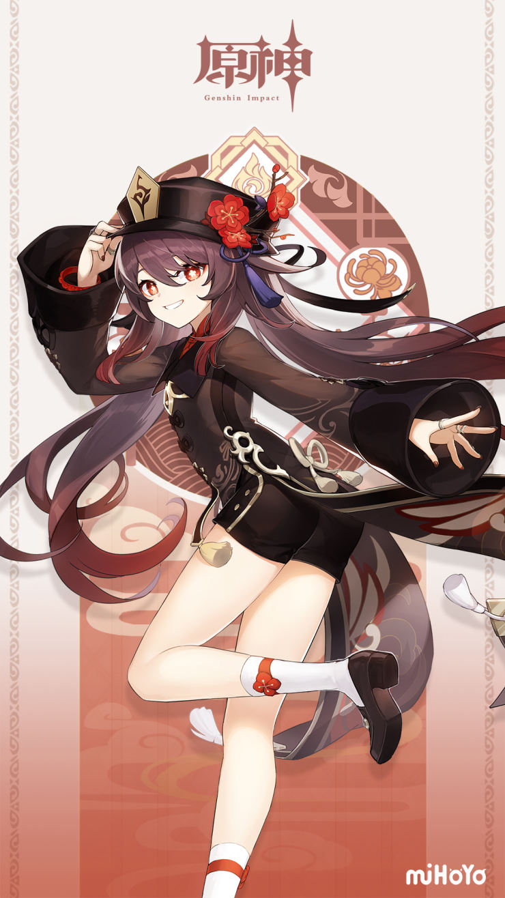

Hu Tao

Greeting Voice
Character Description
The 77th Director of the Wangsheng Funeral Parlor, a young lady managing the parlor's operations. Despite her position, she's an amiable person who puts on no airs. Her antics are as plentiful as the sand on Yaoguang Shoal. She never ceases to shock people with her countless bizarre ideas. Hu Tao may seem like all play and no work, spending every free moment on leisure and being widely considered a laissez-faire business owner. It is only during funeral ceremonies, when she personally leads her undertakers through lamp-lit alleys, that she shows her dignified and solemn side.
| Attributes |
|||
|---|---|---|---|
| Name | Hu Tao | Birthday | 7/15 |
| Constellation | Papilio Charontis | Title | Fragrance in Thaw |
| Vision | Pyros | Affiliation | Wangsheng Funeral Parlor |
| Chinese VA | 陶典 | Korean VA | Kim Ha-ru |
| Japanese VA | 高橋李依 | English VA | Brianna Knickerbocker |
Talents

Normal Attack: Secret Spear of Wangsheng
Normal Attack
Performs up to six consecutive spear strikes.
Charged Attack
Consumes a certain amount of Stamina to lunge forward, dealing damage to opponents along the way.
Plunging Attack
Plunges from mid-air to strike the ground below, damaging opponents along the path and dealing AoE DMG upon impact.
Performs up to six consecutive spear strikes.
Charged Attack
Consumes a certain amount of Stamina to lunge forward, dealing damage to opponents along the way.
Plunging Attack
Plunges from mid-air to strike the ground below, damaging opponents along the path and dealing AoE DMG upon impact.
Guide to Afterlife
Only an unwavering flame can cleanse the impurities of this world.
Hu Tao consumes a set portion of her HP to knock the surrounding enemies back and enter the Paramita Papilio state.
Paramita Papilio
· Increases Hu Tao's ATK based on her Max HP at the time of entering this state. ATK Bonus gained this way cannot exceed 400% of Hu Tao's Base ATK.
· Converts attack DMG to Pyro DMG, which cannot be overridden by any other elemental infusion.
· Charged Attacks apply the Blood Blossom effect to the enemies hit.
· Increases Hu Tao's resistance to interruption.
Blood Blossom
Enemies affected by Blood Blossom will take Pyro DMG every 4s. This DMG is considered Elemental Skill DMG.
Each enemy can be affected by only one Blood Blossom effect at a time, and its duration may only be refreshed by Hu Tao herself.
Paramita Papilio ends when its duration is over, or Hu Tao has left the battlefield or fallen.
Hu Tao consumes a set portion of her HP to knock the surrounding enemies back and enter the Paramita Papilio state.
Paramita Papilio
· Increases Hu Tao's ATK based on her Max HP at the time of entering this state. ATK Bonus gained this way cannot exceed 400% of Hu Tao's Base ATK.
· Converts attack DMG to Pyro DMG, which cannot be overridden by any other elemental infusion.
· Charged Attacks apply the Blood Blossom effect to the enemies hit.
· Increases Hu Tao's resistance to interruption.
Blood Blossom
Enemies affected by Blood Blossom will take Pyro DMG every 4s. This DMG is considered Elemental Skill DMG.
Each enemy can be affected by only one Blood Blossom effect at a time, and its duration may only be refreshed by Hu Tao herself.
Paramita Papilio ends when its duration is over, or Hu Tao has left the battlefield or fallen.

Spirit Soother
Commands a blazing spirit to attack, dealing Pyro DMG in a large AoE.
Upon striking the enemy, regenerates a percentage of Hu Tao's Max HP. This effect can be triggered up to 5 times, based on the number of enemies hit.
If Hu Tao's HP is below or equal to 50% when the enemy is hit, both the DMG and HP Regeneration are increased.
Supernatural activity by those who have already left this world is a source of great anxiety for the Wangsheng Funeral Parlor. In such cases, cremation always lets Hu Tao find peace of mind. The more anxious she feels, the stronger the flame.
Upon striking the enemy, regenerates a percentage of Hu Tao's Max HP. This effect can be triggered up to 5 times, based on the number of enemies hit.
If Hu Tao's HP is below or equal to 50% when the enemy is hit, both the DMG and HP Regeneration are increased.
Supernatural activity by those who have already left this world is a source of great anxiety for the Wangsheng Funeral Parlor. In such cases, cremation always lets Hu Tao find peace of mind. The more anxious she feels, the stronger the flame.

Flutter Byg
When a Paramita Papilio state activated by Guide to Afterlife ends, all allies in the party (excluding Hu Tao herself) will have their CRIT Rate increased by 12% for 8s.

Sanguine Rouge
When Hu Tao's HP is equal to or less than 50%, her Pyro DMG Bonus is increased by 33%.
The More the Merrier
When Hu Tao cooks a dish perfectly, she has a 18% chance to receive an additional "Suspicious" dish of the same type.
Constellation
Crimson Bouquet
While in a Paramita Papilio state activated by Guide to Afterlife, Hu Tao's Charge Attacks do not consume Stamina.
Ominous Rainfall
Increases the Blood Blossom DMG by an amount equal to 10% of Hu Tao's Max HP at the time the effect is applied.
Additionally, Spirit Soother will also apply the Blood Blossom effect.
Lingering Carmine
Increases the Level of Guide to Afterlife by 3.
Maximum upgrade level is 15.
Garden of Eternal Rest
Upon defeating an enemy affected by a Blood Blossom that Hu Tao applied herself, all nearby allies in the party (excluding Hu Tao herself) will have their CRIT Rate increased by 12% for 15s.
Floral Incense
Increases the Level of Spirit Soother by 3.
Maximum upgrade level is 15.
Maximum upgrade level is 15.
Butterfly's Embrace
Triggers when Hu Tao's HP drops below 25%, or when she suffers a lethal strike:
Hu Tao will not fall as a result of the DMG sustained. Additionally, for the next 10s, all of her Elemental and Physical RES is increased by 200%, her CRIT Rate is increased by 100%, and her resistance to interruption is greatly increased.
This effect triggers automatically when Hu Tao has 1 HP left.
Can only occur once every 60s.
Hu Tao will not fall as a result of the DMG sustained. Additionally, for the next 10s, all of her Elemental and Physical RES is increased by 200%, her CRIT Rate is increased by 100%, and her resistance to interruption is greatly increased.
This effect triggers automatically when Hu Tao has 1 HP left.
Can only occur once every 60s.